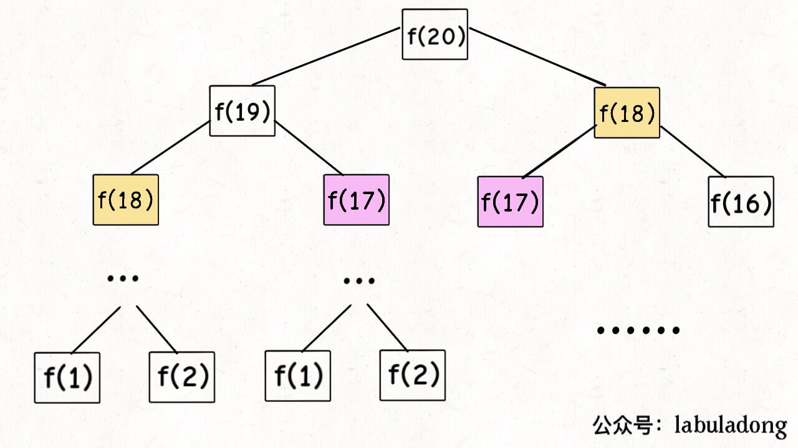
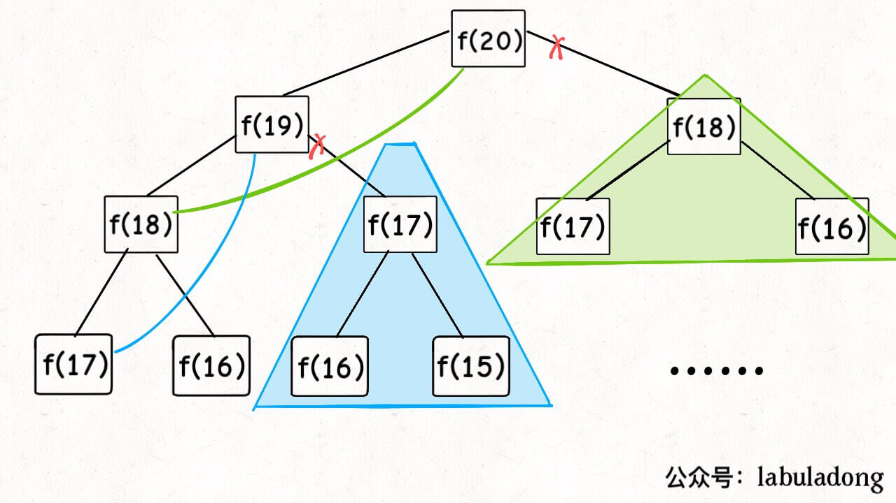
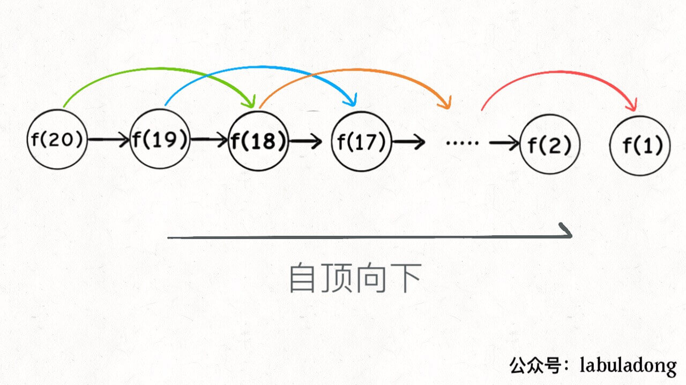
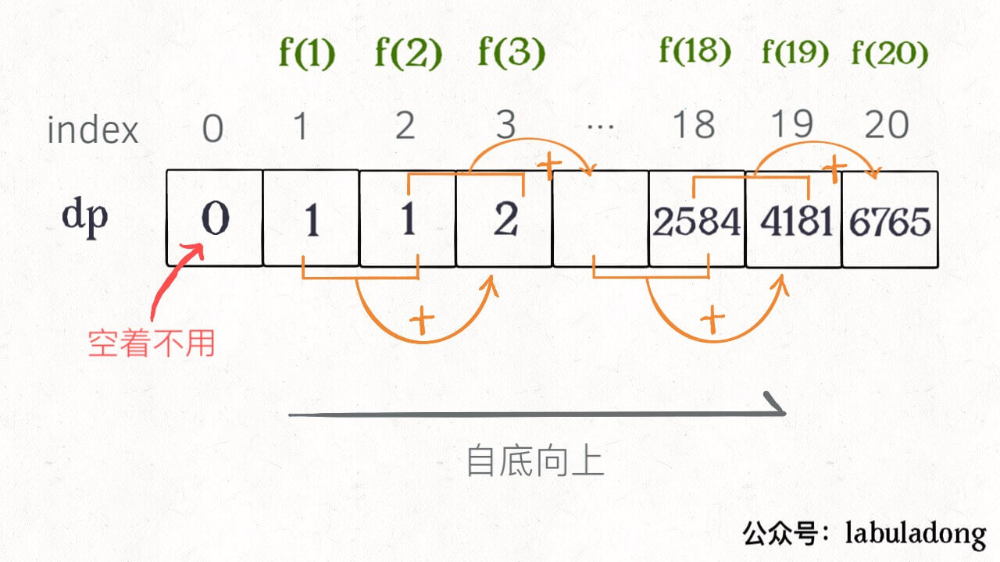
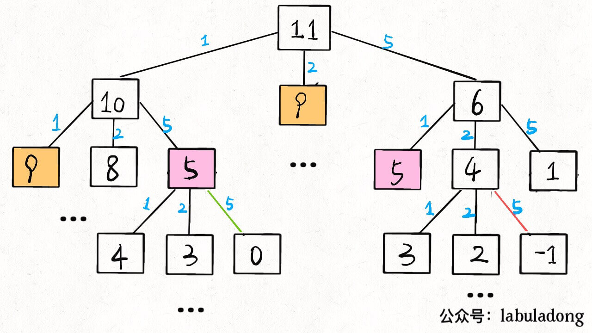
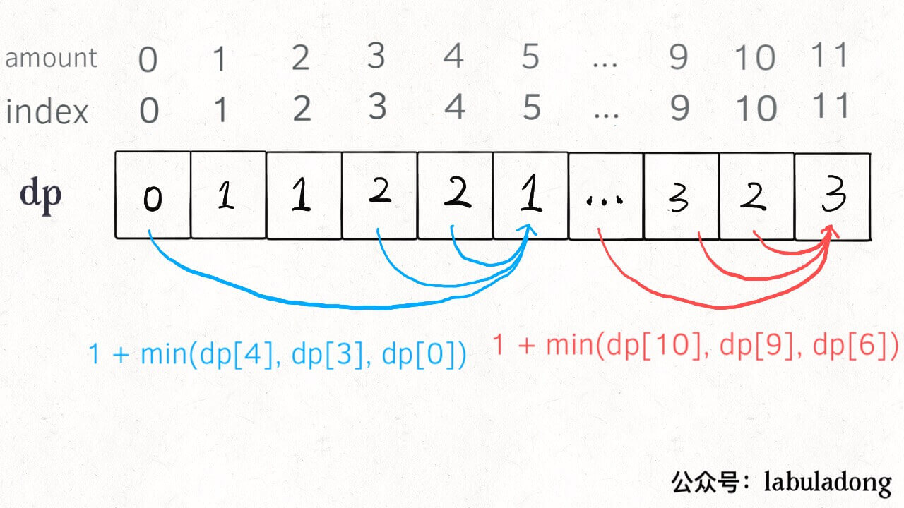

动态规划
- 动态规划问题的一般形式就是求最值
- 求解动态规划的核心问题是穷举
- 动态规划问题一定会具备最优子结构
- 只有列出正确的状态转移方程才能正确的穷举
- 重叠子问题、最优子结构、状态转移方程就是动态规划三要素
- 在实际的算法问题中，写出状态转移方程是最困难的
基本思路
明确 base case -> 明确 状态 -> 明确 选择 -> 定义 dp 数组/函数的含义
基本框架
1 | # 初始化 base case |
斐波那契数列
暴力递归
1 | int fib(int N) { |
PS：但凡遇到需要递归的问题，最好都画出递归树，这对你分析算法的复杂度，寻找算法低效的原因都有巨大帮助。
假设 n = 20，请画出递归树：

递归算法的时间复杂度怎么计算？就是用子问题个数乘以解决一个子问题需要的时间。
首先计算子问题个数，即递归树中节点的总数。显然二叉树节点总数为指数级别，所以子问题个数为 O(2^n)。
然后计算解决一个子问题的时间，在本算法中，没有循环，只有
f(n - 1) + f(n - 2)一个加法操作，时间为 O(1)。所以，这个算法的时间复杂度为二者相乘，即 O(2^n)，指数级别，爆炸。
观察递归树可以看出其中存在着大量的重复计算，这就是动态规划的第一个性质:重叠子问题。
带备忘录的递归解法
明白了耗时的原因是重复计算，那么我们可以造一个备忘录，每次算出某个子问题的答案后不急着返回，先保存到备忘录中，每次遇到一个子问题时，先去备忘录中查一查，如果发现之前已经解决过这个问题了，直接把答案拿出来用，不用再耗时间去计算了。
一般使用数组来充当备忘录，当然也可以使用哈希表(字典)，思想都是一样的。
1 | int fib(int N) { |
画出递归树：

实际上，带「备忘录」的递归算法，把一棵存在巨量冗余的递归树通过「剪枝」，改造成了一幅不存在冗余的递归图，极大减少了子问题（即递归图中节点）的个数。

递归算法的时间复杂度怎么计算？就是用子问题个数乘以解决一个子问题需要的时间。
子问题个数，即图中节点的总数，由于本算法不存在冗余计算，子问题就是
f(1),f(2),f(3)…f(20)，数量和输入规模 n = 20 成正比，所以子问题个数为 O(n)。解决一个子问题的时间，同上，没有什么循环，时间为 O(1)。
所以，本算法的时间复杂度是 O(n)。比起暴力算法，是降维打击。
至此，带备忘录的递归解法的效率已经和迭代的动态规划解法一样了。实际上，这种解法和迭代的动态规划已经差不多了，只不过这种方法叫做「自顶向下」，动态规划叫做「自底向上」。
啥叫「自顶向下」？注意我们刚才画的递归树（或者说图），是从上向下延伸，都是从一个规模较大的原问题比如说
f(20)，向下逐渐分解规模，直到f(1)和f(2)这两个 base case，然后逐层返回答案，这就叫「自顶向下」。啥叫「自底向上」？反过来，我们直接从最底下，最简单，问题规模最小的
f(1)和f(2)开始往上推，直到推到我们想要的答案f(20)，这就是动态规划的思路，这也是为什么动态规划一般都脱离了递归，而是由循环迭代完成计算。
dp数组的迭代解法
有了备忘录的启发，我们可以把这个备忘录独立出来成为一张表，就叫做 DP table，在这张表上完成自底向上的推算
1 | int fib(int N) { |

画个图就很好理解了，而且你发现这个 DP table 特别像之前那个「剪枝」后的结果，只是反过来算而已。实际上，带备忘录的递归解法中的「备忘录」，最终完成后就是这个 DP table，所以说这两种解法其实是差不多的，大部分情况下，效率也基本相同。
这里，引出「状态转移方程」这个名词，实际上就是描述问题结构的数学形式：
为啥叫「状态转移方程」？其实就是为了听起来高端。你把
f(n)想做一个状态n，这个状态n是由状态n - 1和状态n - 2相加转移而来，这就叫状态转移，仅此而已。你会发现，上面的几种解法中的所有操作，例如
return f(n - 1) + f(n - 2)，dp[i] = dp[i - 1] + dp[i - 2]，以及对备忘录或 DP table 的初始化操作，都是围绕这个方程式的不同表现形式。可见列出「状态转移方程」的重要性，它是解决问题的核心。而且很容易发现，其实状态转移方程直接代表着暴力解法。千万不要看不起暴力解，动态规划问题最困难的就是写出这个暴力解，即状态转移方程。只要写出暴力解，优化方法无非是用备忘录或者 DP table，再无奥妙可言。
由于当前的状态只和之前的两个状态有关，其实并不需要那么长的 dp table 来存储所有的状态，只要想办法存储之前的两个状态就行了。所以可以进一步优化，把空间复杂度优化为 O(1):
1 | int fib(int n) { |
这就是所谓的状态压缩，如果我们发现每次状态转移只需要 DP table 中的一部分，那么可以尝试用状态压缩来缩小 DP table 的大小，只记录必要的数据。一般来说是把一个二维的 DP table 压缩成一维，即把空间复杂度从 O(n^2) 压缩到 O(n)。
凑零钱问题
先看下题目：给你 k 种面值的硬币，面值分别为 c1, c2 ... ck，每种硬币的数量无限，再给一个总金额 amount，问你最少需要几枚硬币凑出这个金额，如果不可能凑出，算法返回 -1 。
暴力递归
首先这是一个动态规划问题，因为具有最优子结构。要符合最优子结构，子问题间必须相互独立。
比如说，假设你考试，每门科目的成绩都是互相独立的。你的原问题是考出最高的总成绩，那么你的子问题就是要把语文考到最高，数学考到最高…… 为了每门课考到最高，你要把每门课相应的选择题分数拿到最高，填空题分数拿到最高…… 当然，最终就是你每门课都是满分，这就是最高的总成绩。
得到了正确的结果：最高的总成绩就是总分。因为这个过程符合最优子结构，“每门科目考到最高”这些子问题是互相独立，互不干扰的。
但是，如果加一个条件：你的语文成绩和数学成绩会互相制约，数学分数高，语文分数就会降低，反之亦然。这样的话，显然你能考到的最高总成绩就达不到总分了，按刚才那个思路就会得到错误的结果。因为子问题并不独立，语文数学成绩无法同时最优，所以最优子结构被破坏。
回到凑零钱问题，为什么说它符合最优子结构呢？比如你想求
amount = 11时的最少硬币数（原问题），如果你知道凑出amount = 10的最少硬币数（子问题），你只需要把子问题的答案加一（再选一枚面值为 1 的硬币）就是原问题的答案。因为硬币的数量是没有限制的，所以子问题之间没有相互制，是互相独立的。
既然知道该问题是动态规划问题，就要思考如何列出正确的状态转移方程？
- 确定 base case，这个很简单，显然目标金额
amount为0时算法返回0，一位不需要任何硬币就已经凑出目标金额了。 - 确定状态，也就是原问题和子问题中会变化的量。由于硬币数量无限，硬币的面额也是题目给定的，只有目标金额会不断地向 base case 靠近，所以唯一的状态就是目标金额
amount。 - 确定选择，也就是导致状态产生变化的行为。目标金额为什么变化呢，因为每选择一枚硬币，就相当于减少了目标金额。所以说所有硬币的面值，就是你的选择。
- 明确
dp函数/数组的定义。我们这里讲的是自顶向下的解法，所以会有一个递归的dp函数，一般来说函数的参数就是状态转移中会变化的量，也就是上面说到的「状态」；函数的返回值就是题目要求我们计算的量。就本题来说，状态只有一个，即「目标金额」，题目要求我们计算凑出目标金额所需的最少硬币数量。所以我们可以这样定义dp函数：dp(n)的定义：输入一个目标金额n，返回凑出目标金额n的最少硬币数量。搞清楚上面这几个关键点，解法的伪码就可以写出来了：
1 | # 伪码框架 |
根据伪码，我们加上 base case 即可得到最终的答案。显然目标金额为 0 时，所需硬币数量为 0；当目标金额小于 0 时，无解，返回 -1：
1 | def coinChange(coins: List[int], amount: int): |
至此，状态转移方程其实已经完成了，以上算法已经是暴力解法了，以上代码的数学形式就是状态转移方程：
至此，这个问题其实就解决了，只不过需要消除一下重叠子问题，比如 amount = 11, coins = {1,2,5} 时画出递归树看看：

递归算法的时间复杂度分析：子问题总数 x 每个子问题的时间。
子问题总数为递归树节点个数，这个比较难看出来，是 O(n^k)，总之是指数级别的。每个子问题中含有一个 for 循环，复杂度为 O(k)。所以总时间复杂度为 O(k * n^k)，指数级别。
带备忘录的递归
1 | def coinChange(coins: List[int], amount: int): |
很显然「备忘录」大大减小了子问题数目，完全消除了子问题的冗余，所以子问题总数不会超过金额数 n，即子问题数目为 O(n)。处理一个子问题的时间不变，仍是 O(k)，所以总的时间复杂度是 O(kn)。
dp 数组的迭代解法
当然，我们也可以自底向上使用 dp table 来消除重叠子问题，关于「状态」「选择」和 base case 与之前没有区别，dp 数组的定义和刚才 dp 函数类似，也是把「状态」，也就是目标金额作为变量。不过 dp 函数体现在函数参数，而 dp 数组体现在数组索引：
dp 数组的定义：当目标金额为 i 时，至少需要 dp[i] 枚硬币凑出。
根据我们文章开头给出的动态规划代码框架可以写出如下解法：
1 | int coinChange(vector<int>& coins, int amount) { |

PS：为啥
dp数组初始化为amount + 1呢，因为凑成amount金额的硬币数最多只可能等于amount（全用 1 元面值的硬币），所以初始化为amount + 1就相当于初始化为正无穷，便于后续取最小值。
总结
计算机解决问题其实没有任何奇技淫巧，它唯一的解决办法就是穷举，穷举所有可能性。算法设计无非就是先思考“如何穷举”，然后再追求“如何聪明地穷举”。
列出动态转移方程，就是在解决“如何穷举”的问题。之所以说它难，一是因为很多穷举需要递归实现，二是因为有的问题本身的解空间复杂，不那么容易穷举完整。
备忘录、DP table 就是在追求“如何聪明地穷举”。用空间换时间的思路，是降低时间复杂度的不二法门，除此之外，试问，还能玩出啥花活？